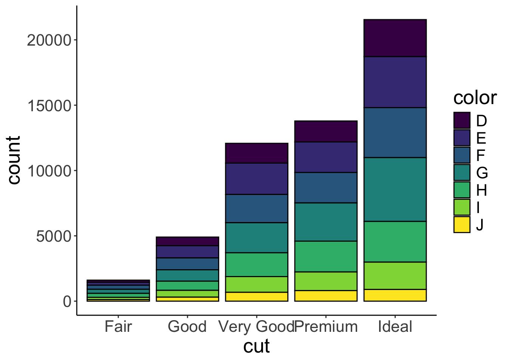
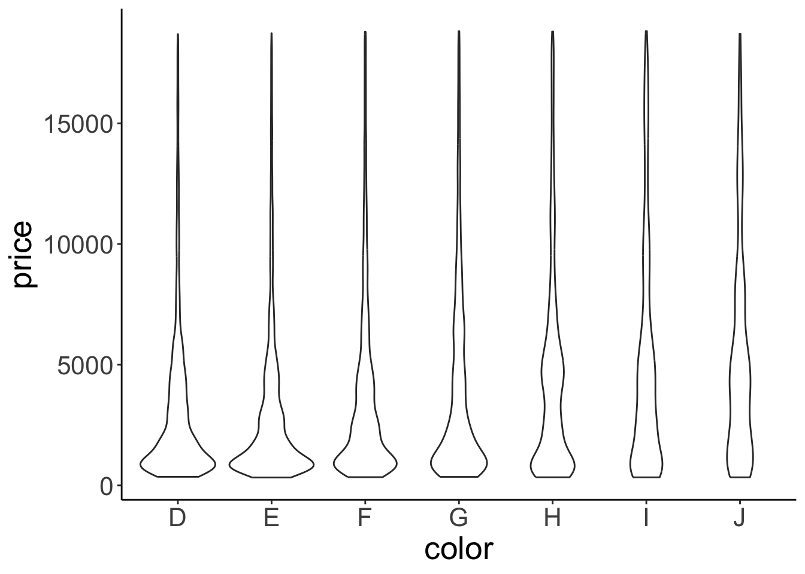
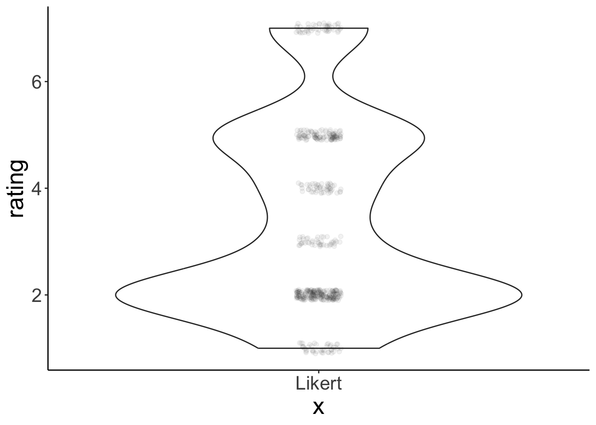
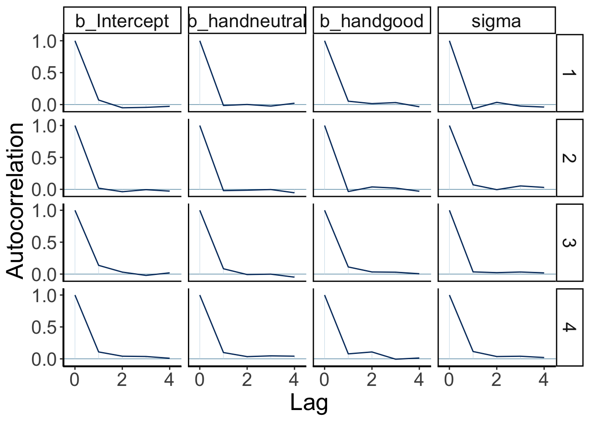
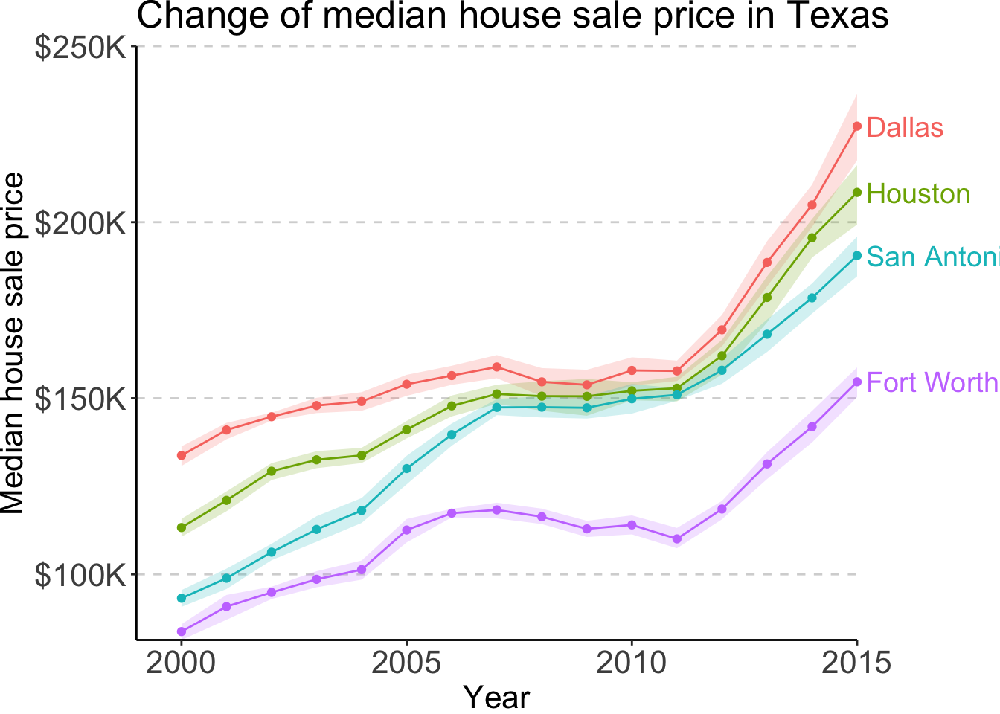
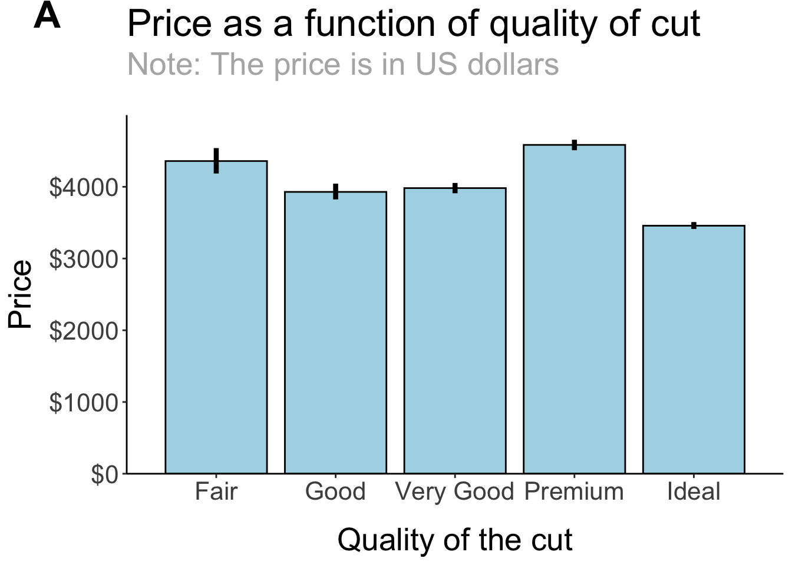
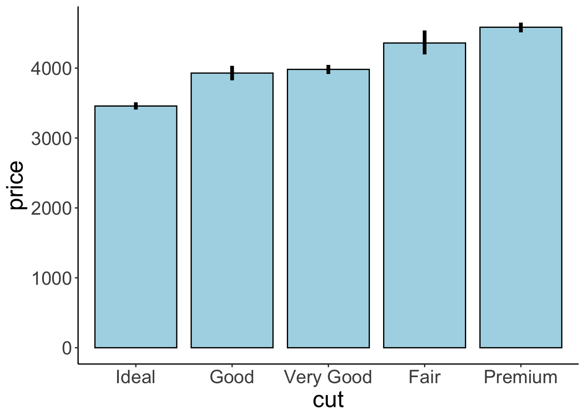
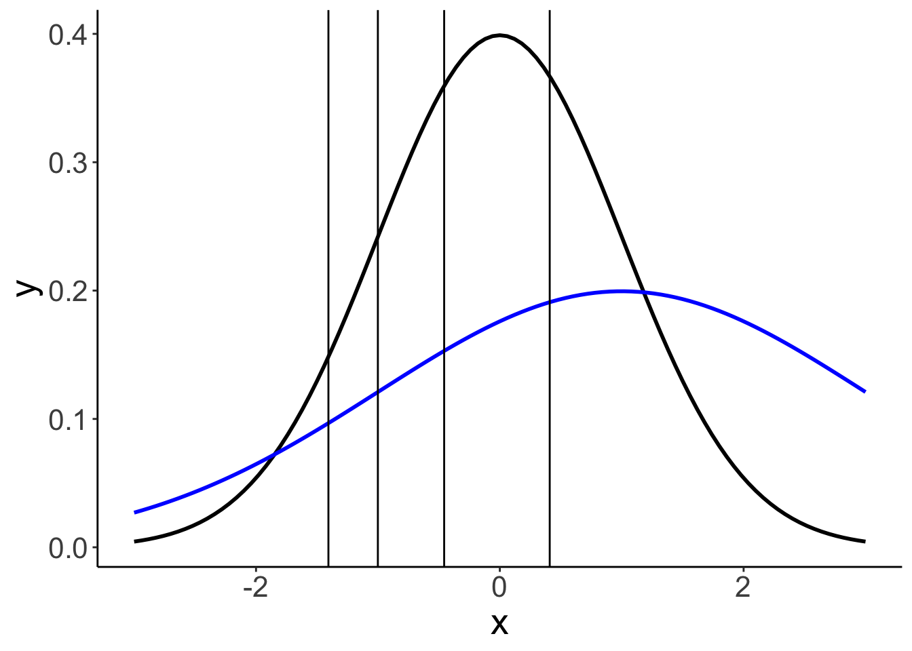
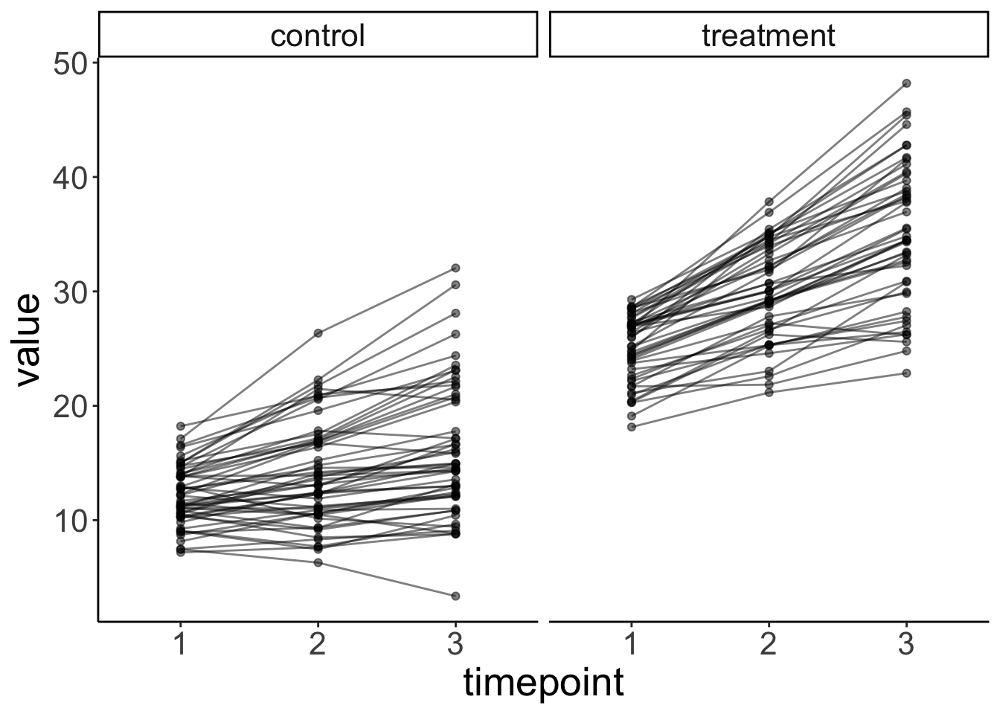
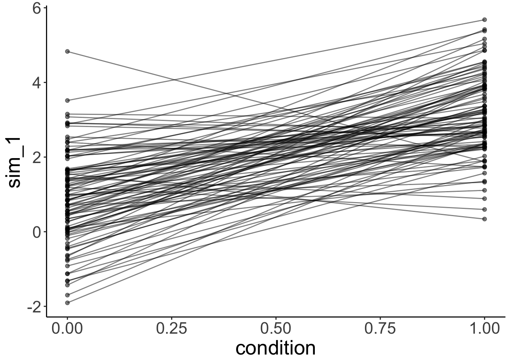

Chapter 3 Visualization 2
In this lecture, we will lift our ggplot2 skills to the next level!
3.1 Learning objectives
- Deciding what plot is appropriate for what kind of data.
- Customizing plots: Take a sad plot and make it better.
- Saving plots.
- Making figure panels.
- Debugging.
- Making animations.
- Defining snippets.
3.2 Install and load packages, load data, set theme
Let’s first install the new packages that you might not have yet.
install.packages(c("ggpol", "gganimate", "gapminder", "ggridges", "devtools", "png", "gifski", "patchwork"))Now, let’s load the packages that we need for this chapter.
library("knitr") # for rendering the RMarkdown file
library("patchwork") # for making figure panels
library("ggpol") # for making fancy boxplots
library("ggridges") # for making joyplots
library("gganimate") # for making animations
library("gapminder") # data available from Gapminder.org
library("tidyverse") # for plotting (and many more cool things we'll discover later)And set some settings:
# these options here change the formatting of how comments are rendered
opts_chunk$set(comment = "#>",
fig.show = "hold")
# this just suppresses an unnecessary message about grouping
options(dplyr.summarise.inform = F)
# set the default plotting theme
theme_set(theme_classic() + #set the theme
theme(text = element_text(size = 20))) #set the default text sizeAnd let’s load the diamonds data again.
df.diamonds = diamonds3.3 Overview of different plot types for different things
Different plots work best for different kinds of data. Let’s take a look at some.
3.3.1 Proportions
3.3.1.1 Stacked bar charts
ggplot(data = df.diamonds,
mapping = aes(x = cut,
fill = color)) +
geom_bar(color = "black")
This bar chart shows for the different cuts (x-axis), the number of diamonds of different color. Stacked bar charts give a good general impression of the data. However, it’s difficult to precisely compare different proportions.
3.3.1.2 Pie charts

Figure 3.1: Finally a pie chart that makes sense.
Pie charts have a bad reputation. And there are indeed a number of problems with pie charts:
- proportions are difficult to compare
- don’t look good when there are many categories
ggplot(data = df.diamonds,
mapping = aes(x = 1,
fill = cut)) +
geom_bar() +
coord_polar("y", start = 0) +
theme_void()
We can create a pie chart with ggplot2 by changing the coordinate system using coord_polar().
If we are interested in comparing proportions and we don’t have too many data points, then tables are a good alternative to showing figures.
3.3.2 Comparisons
Often we want to compare the data from many different conditions. And sometimes, it’s also useful to get a sense for what the individual participant data look like. Here is a plot that achieves both.
ggplot(data = df.diamonds[1:150, ],
mapping = aes(x = color, y = price)) +
# individual data points (jittered horizontally)
geom_point(alpha = 0.2,
color = "blue",
position = position_jitter(width = 0.1, height = 0),
size = 2) +
# means with confidence intervals
stat_summary(fun.data = "mean_cl_boot",
geom = "pointrange",
color = "black",
fill = "yellow",
shape = 21,
size = 1)Figure 3.2: Price of differently colored diamonds. Large yellow circles are means, small black circles are individual data poins, and the error bars are 95% bootstrapped confidence intervals.
Note that I’m only plotting the first 150 entries of the data here by setting data = df.diamonds[1:150,] in gpplot().
This plot shows means, bootstrapped confidence intervals, and individual data points. I’ve used two tricks to make the individual data points easier to see.
1. I’ve set the alpha attribute to make the points somewhat transparent.
2. I’ve used the position_jitter() function to jitter the points horizontally.
3. I’ve used shape = 21 for displaying the mean. For this circle shape, we can set a color and fill (see Figure 3.3)

Figure 3.3: Different shapes that can be used for plotting.
Here is an example of an actual plot that I’ve made for a paper that I’m working on (using the same techniques).

Figure 3.4: Participants’ preference for the conjunctive (top) versus dis-junctive (bottom) structure as a function of the explanation (abnormal cause vs. normalcause) and the type of norm (statistical vs. prescriptive). Note: Large circles are groupmeans. Error bars are bootstrapped 95% confidence intervals. Small circles are individualparticipants’ judgments (jittered along the x-axis for visibility)
3.3.2.1 Boxplots
Another way to get a sense for the distribution of the data is to use box plots.
ggplot(data = df.diamonds[1:500,],
mapping = aes(x = color, y = price)) +
geom_boxplot()
What do boxplots show? Here adapted from help(geom_boxplot()):
The boxplots show the median as a horizontal black line. The lower and upper hinges correspond to the first and third quartiles (the 25th and 75th percentiles) of the data. The whiskers (= black vertical lines) extend from the top or bottom of the hinge by at most 1.5 * IQR (where IQR is the inter-quartile range, or distance between the first and third quartiles). Data beyond the end of the whiskers are called “outlying” points and are plotted individually.
Personally, I’m not a big fan of boxplots. Many data sets are consistent with the same boxplot.

Figure 3.5: Box plot distributions. Source: https://www.autodeskresearch.com/publications/samestats
Figure 3.5 shows three different distributions that each correspond to the same boxplot.
If there is not too much data, I recommend to plot jittered individual data points instead. If you do have a lot of data points, then violin plots can be helpful.

Figure 3.6: Boxplot distributions. Source: https://www.autodeskresearch.com/publications/samestats
Figure 3.6 shows the same raw data represented as jittered dots, boxplots, and violin plots.
The ggpol packages has a geom_boxjitter() function which displays a boxplot and the jittered data right next to each other.
set.seed(1) # used to make the example reproducible
ggplot(data = df.diamonds %>% sample_n(1000),
mapping = aes(x = color, y = price)) +
ggpol::geom_boxjitter(jitter.shape = 1,
jitter.color = "black",
jitter.alpha = 0.2,
jitter.params = list(width = 0.04, height = 0),
outlier.color = NA,
errorbar.draw = FALSE) +
# let's also add the means to the plot
stat_summary(fun = "mean",
geom = "point",
shape = 21,
color = "black",
fill = "yellow",
size = 4)
3.3.2.2 Violin plots
We make violin plots like so:
ggplot(data = df.diamonds,
mapping = aes(x = color, y = price)) +
geom_violin()
Violin plots are good for detecting bimodal distributions. They work well when:
- You have many data points.
- The data is continuous.
Violin plots don’t work well for Likert-scale data (e.g. ratings on a discrete scale from 1 to 7). Here is a simple example:
set.seed(1)
data = tibble(rating = sample(x = 1:7,
prob = c(0.1, 0.4, 0.1, 0.1, 0.2, 0, 0.1),
size = 500,
replace = T))
ggplot(data = data,
mapping = aes(x = "Likert", y = rating)) +
geom_violin() +
geom_point(position = position_jitter(width = 0.05,
height = 0.1),
alpha = 0.05)
This represents a vase much better than it represents the data.
3.3.2.3 Joy plots
We can also show the distributions along the x-axis using the geom_density_ridges() function from the ggridges package.
ggplot(data = df.diamonds,
mapping = aes(x = price, y = color)) +
ggridges::geom_density_ridges(scale = 1.5)#> Picking joint bandwidth of 535
3.3.2.4 Practice plot 1
Try to make the plot shown in Figure ??. Here are some tips:
- For the data argument in
ggplot()use:df.diamonds[1:10000, ](this selects the first 10000 rows). - Figure ?? will help you with figuring out the other components
ggplot(data = diamonds[1:10000, ],
mapping = aes(x = cut, y = price)) +
geom_violin() +
geom_point(alpha = 0.1,
position = position_jitter(width = 0.1)) +
stat_summary(fun = "mean",
shape = 21,
geom = "point",
fill = "blue",
size = 5)

Figure 3.7: Practice plot 1.
3.3.3 Relationships
3.3.3.1 Scatter plots
Scatter plots are great for looking at the relationship between two continuous variables.
ggplot(data = df.diamonds,
mapping = aes(x = carat,
y = price,
color = color)) +
geom_point()
3.3.3.2 Raster plots
These are useful for looking how a variable of interest varies as a function of two other variables. For example, when we are trying to fit a model with two parameters, we might be interested to see how well the model does for different combinations of these two parameters. Here, we’ll plot what carat values diamonds of different color and clarity have.
ggplot(data = df.diamonds,
mapping = aes(x = color,
y = clarity,
z = carat)) +
stat_summary_2d(fun = "mean", geom = "tile")
Not too bad. Let’s add a few tweaks to make it look nicer.
ggplot(data = df.diamonds,
mapping = aes(x = color,
y = clarity,
z = carat)) +
stat_summary_2d(fun = "mean",
geom = "tile",
color = "black") +
scale_fill_gradient(low = "white", high = "black") +
labs(fill = "carat")
I’ve added some outlines to the tiles by specifying color = "black" in geom_tile() and I’ve changed the scale for the fill gradient. I’ve defined the color for the low value to be “white,” and for the high value to be “black.” Finally, I’ve changed the lower and upper limit of the scale via the limits argument. Looks much better now! We see that diamonds with clarity I1 and color J tend to have the highest carat values on average.
3.3.4 Temporal data
Line plots are a good choice for temporal data. Here, I’ll use the txhousing data that comes with the ggplot2 package. The dataset contains information about housing sales in Texas.
# ignore this part for now (we'll learn about data wrangling soon)
df.plot = txhousing %>%
filter(city %in% c("Dallas", "Fort Worth", "San Antonio", "Houston")) %>%
mutate(city = factor(city, levels = c("Dallas", "Houston", "San Antonio", "Fort Worth")))
ggplot(data = df.plot,
mapping = aes(x = year,
y = median,
color = city,
fill = city)) +
stat_summary(fun.data = "mean_cl_boot",
geom = "ribbon",
alpha = 0.2,
linetype = 0) +
stat_summary(fun = "mean", geom = "line") +
stat_summary(fun = "mean", geom = "point") 
Ignore the top part where I’m defining df.plot for now (we’ll look into this in the next class). The other part is fairly straightforward. I’ve used stat_summary() three times: First, to define the confidence interval as a geom = "ribbon". Second, to show the lines connecting the means, and third to put the means as data points points on top of the lines.
Let’s tweak the figure some more to make it look real good.
df.plot = txhousing %>%
filter(city %in% c("Dallas", "Fort Worth", "San Antonio", "Houston")) %>%
mutate(city = factor(city, levels = c("Dallas", "Houston", "San Antonio", "Fort Worth")))
df.text = df.plot %>%
filter(year == max(year)) %>%
group_by(city) %>%
summarize(year = mean(year) + 0.2,
median = mean(median))
ggplot(data = df.plot,
mapping = aes(x = year,
y = median,
color = city,
fill = city)) +
# draw dashed horizontal lines in the background
geom_hline(yintercept = seq(from = 100000,
to = 250000,
by = 50000),
linetype = 2,
alpha = 0.2) +
# draw ribbon
stat_summary(fun.data = mean_cl_boot,
geom = "ribbon",
alpha = 0.2,
linetype = 0) +
# draw lines connecting the means
stat_summary(fun = "mean", geom = "line") +
# draw means as points
stat_summary(fun = "mean", geom = "point") +
# add the city names
geom_text(data = df.text,
mapping = aes(label = city),
hjust = 0,
size = 5) +
# set the y-axis labels
scale_y_continuous(breaks = seq(from = 100000,
to = 250000,
by = 50000),
labels = str_c("$",
seq(from = 100,
to = 250,
by = 50),
"K")) +
# set the x-axis labels
scale_x_continuous(breaks = seq(from = 2000,
to = 2015,
by = 5)) +
# set the limits for the coordinates
coord_cartesian(xlim = c(1999, 2015),
clip = "off",
expand = F) +
# set the plot title and axes titles
labs(title = "Change of median house sale price in Texas",
x = "Year",
y = "Median house sale price",
fill = "",
color = "") +
theme(title = element_text(size = 16),
legend.position = "none",
plot.margin = margin(r = 1, unit = "in"))
3.4 Customizing plots
So far, we’ve seen a number of different ways of plotting data. Now, let’s look into how to customize the plots. For example, we may wanta to change the axis labels, add a title, increase the font size. ggplot2 let’s you customize almost anything.
Let’s start simple.
ggplot(data = df.diamonds,
mapping = aes(x = cut, y = price)) +
stat_summary(fun = "mean",
geom = "bar",
color = "black") +
stat_summary(fun.data = "mean_cl_boot",
geom = "linerange")This plot shows the average price for diamonds with a different quality of the cut, as well as the bootstrapped confidence intervals. Here are some things we can do to make it look nicer.
ggplot(data = df.diamonds, mapping = aes(x = cut, y = price)) +
# change color of the fill, make a little more space between bars by setting their width
stat_summary(fun = "mean",
geom = "bar",
color = "black",
fill = "lightblue",
width = 0.85) +
# make error bars thicker
stat_summary(fun.data = "mean_cl_boot",
geom = "linerange",
size = 1.5) +
# adjust what to show on the y-axis
scale_y_continuous(breaks = seq(from = 0, to = 4000, by = 2000),
labels = seq(from = 0, to = 4000, by = 2000)) +
# adjust the range of both axes
coord_cartesian(xlim = c(0.25, 5.75),
ylim = c(0, 5000),
expand = F) +
# add a title, subtitle, and changed axis labels
labs(title = "Price as a function of quality of cut",
subtitle = "Note: The price is in US dollars",
tag = "A",
x = "Quality of the cut",
y = "Price") +
theme(
# adjust the text size
text = element_text(size = 20),
# add some space at top of x-title
axis.title.x = element_text(margin = margin(t = 0.2, unit = "inch")),
# add some space t the right of y-title
axis.title.y = element_text(margin = margin(r = 0.1, unit = "inch")),
# add some space underneath the subtitle and make it gray
plot.subtitle = element_text(margin = margin(b = 0.3, unit = "inch"),
color = "gray70"),
# make the plot tag bold
plot.tag = element_text(face = "bold"),
# move the plot tag a little
plot.tag.position = c(0.05, 0.99)
)
I’ve tweaked quite a few things here (and I’ve added comments to explain what’s happening). Take a quick look at the theme() function to see all the things you can change.
3.4.1 Anatomy of a ggplot
I suggest to use this general skeleton for creating a ggplot:
# ggplot call with global aesthetics
ggplot(data = data,
mapping = aes(x = cause,
y = effect)) +
# add geometric objects (geoms)
geom_point() +
stat_summary(fun = "mean", geom = "point") +
... +
# add text objects
geom_text() +
annotate() +
# adjust axes and coordinates
scale_x_continuous() +
scale_y_continuous() +
coord_cartesian() +
# define plot title, and axis titles
labs(title = "Title",
x = "Cause",
y = "Effect") +
# change global aspects of the plot
theme(text = element_text(size = 20),
plot.margin = margin(t = 1, b = 1, l = 0.5, r = 0.5, unit = "cm")) +
# save the plot
ggsave(filename = "super_nice_plot.pdf",
width = 8,
height = 6)3.4.2 Changing the order of things
Sometimes we don’t have a natural ordering of our independent variable. In that case, it’s nice to show the data in order.
ggplot(data = df.diamonds,
mapping = aes(x = reorder(cut, price), y = price)) +
# mapping = aes(x = cut, y = price)) +
stat_summary(fun = "mean",
geom = "bar",
color = "black",
fill = "lightblue",
width = 0.85) +
stat_summary(fun.data = "mean_cl_boot",
geom = "linerange",
size = 1.5) +
labs(x = "cut")
The reorder() function helps us to do just that. Now, the results are ordered according to price. To show the results in descending order, I would simply need to write reorder(cut, -price) instead.
3.4.3 Dealing with legends
Legends form an important part of many figures. However, it is often better to avoid legends if possible, and directly label the data. This way, the reader doesn’t have to look back and forth between the plot and the legend to understand what’s going on.
Here, we’ll look into a few aspects that come up quite often. There are two main functions to manipulate legends with ggplot2
1. theme() (there are a number of arguments starting with legend.)
2. guide_legend()
Let’s make a plot with a legend.
ggplot(data = df.diamonds,
mapping = aes(x = color,
y = price,
color = clarity)) +
stat_summary(fun = "mean", geom = "point")
Let’s move the legend to the bottom of the plot:
ggplot(data = df.diamonds,
mapping = aes(x = color,
y = price,
color = clarity)) +
stat_summary(fun = "mean", geom = "point") +
theme(legend.position = "bottom")
Let’s change a few more things in the legend using the guides() function:
- have 3 rows
- reverse the legend order
- make the points in the legend larger
ggplot(data = df.diamonds, mapping = aes(x = color, y = price, color = clarity)) +
stat_summary(fun = "mean", geom = "point", size = 2) +
theme(legend.position = "bottom") +
guides(color = guide_legend(nrow = 3, # 3 rows
reverse = TRUE, # reversed order
override.aes = list(size = 6))) # point size 
3.4.4 Choosing good colors
Color brewer helps with finding colors that are colorblind safe and printfriendly. For more information on how to use color effectively see here.
3.4.5 Customizing themes
For a given project, I often want all of my plots to share certain visual features such as the font type, font size, how the axes are displayed, etc. Instead of defining these for each individual plot, I can set a theme at the beginning of my project so that it applies to all the plots in this file. To do so, I use the theme_set() command:
theme_set(theme_classic() + #classic theme
theme(text = element_text(size = 20))) #text size Here, I’ve just defined that I want to use theme_classic() for all my plots, and that the text size should be 20. For any individual plot, I can still overwrite any of these defaults.
3.5 Saving plots
To save plots, use the ggsave() command. Personally, I prefer to save my plots as pdf files. This way, the plot looks good no matter what size you need it to be. This means it’ll look good both in presentations as well as in a paper. You can save the plot in any format that you like.
I strongly recommend to use a relative path to specify where the figure should be saved. This way, if you are sharing the project with someone else via Stanford Box, Dropbox, or Github, they will be able to run the code without errors.
Here is an example for how to save one of the plots that we’ve created above.
p1 = ggplot(data = df.diamonds,
mapping = aes(x = cut, y = price)) +
stat_summary(fun = "mean",
geom = "bar",
color = "black",
fill = "lightblue") +
stat_summary(fun.data = "mean_cl_boot",
geom = "linerange",
size = 1)
print(p1)
p2 = ggplot(data = df.diamonds,
mapping = aes(x = cut, y = price)) +
stat_summary(fun = "mean",
geom = "bar",
color = "black",
fill = "lightblue") +
stat_summary(fun.data = "mean_cl_boot",
geom = "linerange",
size = 1)
ggsave(filename = "figures/diamond_plot.pdf",
plot = p1,
width = 8,
height = 6)
Here, I’m saving the plot in the figures folder and it’s name is diamond_plot.pdf. I also specify the width and height as the plot in inches (which is the default unit).
3.6 Creating figure panels
Sometimes, we want to create a figure with several subfigures, each of which is labeled with a), b), etc. We have already learned how to make separate panels using facet_wrap() or facet_grid(). The R package patchwork makes it very easy to combine multiple plots.
Let’s combine a few plots that we’ve made above into one.
# first plot
p1 = ggplot(data = df.diamonds,
mapping = aes(x = y, fill = color)) +
geom_density(bw = 0.2,
show.legend = F) +
facet_grid(cols = vars(color)) +
coord_cartesian(xlim = c(3, 10),
expand = F) + #setting expand to FALSE removes any padding on x and y axes
labs(title = "Width of differently colored diamonds",
tag = "A")
# second plot
p2 = ggplot(data = df.diamonds,
mapping = aes(x = color,
y = clarity,
z = carat)) +
stat_summary_2d(fun = "mean",
geom = "tile") +
labs(title = "Carat values",
subtitle = "For different color and clarity",
x = "Color",
tag = "B")
# third plot
p3 = ggplot(data = df.diamonds,
mapping = aes(x = cut, y = price)) +
stat_summary(fun = "mean",
geom = "bar",
color = "black",
fill = "lightblue",
width = 0.85) +
stat_summary(fun.data = "mean_cl_boot",
geom = "linerange",
size = 1.5) +
scale_x_discrete(labels = c("fair", "good", "very\ngood", "premium", "ideal")) +
labs(title = "Price as a function of cut",
subtitle = "Note: The price is in US dollars",
tag = "C",
x = "Quality of the cut",
y = "Price") +
coord_cartesian(xlim = c(0.25, 5.75),
ylim = c(0, 5000),
expand = F)
# combine the plots
p1 + (p2 + p3) +
plot_layout(ncol = 1) &
theme_classic() &
theme(plot.tag = element_text(face = "bold", size = 20))
# ggsave("figures/combined_plot.png", width = 10, height = 6)
Not a perfect plot yet, but you get the idea. To combine the plots, we defined that we would like p2 and p3 to be displayed in the same row using the () syntax. And we specified that we only want one column via the plot_layout() function. We also applied the same theme_classic() to all the plots using the & operator, and formatted how the plot tags should be displayed. For more info on how to use patchwork, take a look at the readme on the github page.
Other packages that provide additional functionality for combining multiple plots into one are
An alternative way for making these plots is to use Adobe Illustrator, Powerpoint, or Keynote. However, you want to make changing plots as easy as possible. Adobe Illustrator has a feature that allows you to link to files. This way, if you change the plot, the plot within the illustrator file gets updated automatically as well.
If possible, it’s much better to do everything in R though so that your plot can easily be reproduced by someone else.
3.7 Peeking behind the scenes
Sometimes it can be helpful for debugging to take a look behind the scenes. Silently, ggplot() computes a data frame based on the information you pass to it. We can take a look at the data frame that’s underlying the plot.
p = ggplot(data = df.diamonds,
mapping = aes(x = color,
y = clarity,
z = carat)) +
stat_summary_2d(fun = "mean",
geom = "tile",
color = "black") +
scale_fill_gradient(low = "white", high = "black")
print(p)
build = ggplot_build(p)
df.plot_info = build$data[[1]]
dim(df.plot_info) # data frame dimensions#> [1] 56 18
I’ve called the ggplot_build() function on the ggplot2 object that we saved as p. I’ve then printed out the data associated with that plot object. The first thing we note about the data frame is how many entries it has, 56. That’s good. This means there is one value for each of the 7 x 8 grids. The columns tell us what color was used for the fill, the value associated with each row, where each row is being displayed (x and y), etc.
If a plot looks weird, it’s worth taking a look behind the scenes. For example, something we thing we could have tried is the following (in fact, this is what I tried first):
p = ggplot(data = df.diamonds,
mapping = aes(x = color,
y = clarity,
fill = carat)) +
geom_tile(color = "black") +
scale_fill_gradient(low = "white", high = "black")
print(p)
build = ggplot_build(p)
df.plot_info = build$data[[1]]
dim(df.plot_info) # data frame dimensions#> [1] 53940 15
Why does this plot look different from the one before? What went wrong here? Notice that the data frame associated with the ggplot2 object has 53940 rows. So instead of plotting means here, we plotted all the individual data points. So what we are seeing here is just the top layer of many, many layers.
3.8 Making animations
Animated plots can be a great way to illustrate your data in presentations. The R package gganimate lets you do just that.
Here is an example showing how to use it.
ggplot(data = gapminder,
mapping = aes(x = gdpPercap,
y = lifeExp,
size = pop,
colour = country)) +
geom_point(alpha = 0.7, show.legend = FALSE) +
geom_text(data = gapminder %>% filter(country %in% c("United States", "China", "India")),
mapping = aes(label = country),
color = "black",
vjust = -0.75,
show.legend = FALSE) +
scale_colour_manual(values = country_colors) +
scale_size(range = c(2, 12)) +
scale_x_log10(breaks = c(1e3, 1e4, 1e5),
labels = c("1,000", "10,000", "100,000")) +
theme_classic() +
theme(text = element_text(size = 23)) +
# Here come the gganimate specific bits
labs(title = "Year: {frame_time}", x = "GDP per capita", y = "life expectancy") +
transition_time(year) +
ease_aes("linear")
# anim_save(filename = "figures/life_gdp_animation.gif") # to save the animation
This takes a while to run but it’s worth the wait. The plot shows the relationship between GDP per capita (on the x-axis) and life expectancy (on the y-axis) changes across different years for the countries of different continents. The size of each dot represents the population size of the respective country. And different countries are shown in different colors. This animation is not super useful yet in that we don’t know which continents and countries the different dots represent. I’ve added a label to the United States, China, and India.
Note how little is required to define the gganimate-specific information! The {frame_time} variable changes the title for each frame. The transition_time() variable is set to year, and the kind of transition is set as ‘linear’ in ease_aes(). I’ve saved the animation as a gif in the figures folder.
We won’t have time to go into more detail here but I encourage you to play around with gganimate. It’s fun, looks cool, and (if done well) makes for a great slide in your next presentation!
3.9 Shiny apps
The package shiny makes it relatively easy to create interactive plots that can be hosted online. Here is a gallery with some examples.
3.10 Defining snippets
Often, we want to create similar plots over and over again. One way to achieve this is by finding the original plot, copy and pasting it, and changing the bits that need changing. Another more flexible and faster way to do this is by using snippets. Snippets are short pieces of code that
Here are some snippets I use:
snippet snbar
ggplot(data = ${1:data}, mapping = aes(x = ${2:x}, y = ${3:y})) +
stat_summary(fun = "mean", geom = "bar", color = "black") +
stat_summary(fun.data = "mean_cl_boot", geom = "linerange")
snippet sngg
ggplot(data = ${1:data}, mapping = aes(${2:aes})) +
${0}
snippet sndf
${1:data} = ${1:data} %>%
${0}To make a bar plot, I now only need to type snbar and then hit TAB to activate the snippet. I can then cycle through the bits in the code that are marked with ${Number:word} by hitting TAB again.
In RStudio, you can change and add snippets by going to Tools –> Global Options… –> Code –> Edit Snippets. Make sure to set the tick mark in front of Enable Code Snippets (see Figure 3.8). ).

Figure 3.8: Enable code snippets.
To edit code snippets faster, run this command from the usethis package. Make sure to install the package first if you don’t have it yet.
# install.packages("usethis")
usethis::edit_rstudio_snippets()This command opens up a separate tab in RStudio called r.snippets so that you can make new snippets and adapt old ones more quickly. Take a look at the snippets that RStudio already comes with. And then, make some new ones! By using snippets you will be able to avoid typing the same code over and over again, and you won’t have to memorize as much, too.
3.11 Additional resources
3.11.1 Cheatsheets
- shiny –> interactive plots
3.11.2 Data camp courses
3.11.3 Books and chapters
3.11.4 Misc
- ggplot2 extensions –> gallery of ggplot2 extension packages
- ggplot2 gui –> ggplot2 extension package
- ggplot2 visualizations with code –> gallery of plots with code
- Color brewer –> for finding colors
- shiny apps examples –> shiny apps examples that focus on statistics teaching (made by students at PennState)
3.12 Session info
Information about this R session including which version of R was used, and what packages were loaded.
sessionInfo()#> R version 4.0.3 (2020-10-10)
#> Platform: x86_64-apple-darwin17.0 (64-bit)
#> Running under: macOS Catalina 10.15.7
#>
#> Matrix products: default
#> BLAS: /Library/Frameworks/R.framework/Versions/4.0/Resources/lib/libRblas.dylib
#> LAPACK: /Library/Frameworks/R.framework/Versions/4.0/Resources/lib/libRlapack.dylib
#>
#> locale:
#> [1] en_US.UTF-8/en_US.UTF-8/en_US.UTF-8/C/en_US.UTF-8/en_US.UTF-8
#>
#> attached base packages:
#> [1] stats graphics grDevices utils datasets methods base
#>
#> other attached packages:
#> [1] modelr_0.1.8 extraDistr_1.9.1 ggrepel_0.8.2 cowplot_1.1.0
#> [5] tidybayes_2.3.1 greta_0.3.1 janitor_2.0.1 kableExtra_1.3.1
#> [9] boot_1.3-25 styler_1.3.2 forcats_0.5.0 stringr_1.4.0
#> [13] dplyr_1.0.2 purrr_0.3.4 readr_1.4.0 tidyr_1.1.2
#> [17] tibble_3.0.4 tidyverse_1.3.0 gapminder_0.3.0 gganimate_1.0.7
#> [21] ggridges_0.5.3 ggpol_0.0.7 ggplot2_3.3.2 patchwork_1.1.1
#> [25] knitr_1.30
#>
#> loaded via a namespace (and not attached):
#> [1] colorspace_2.0-0 ellipsis_0.3.1 snakecase_0.11.0
#> [4] htmlTable_2.1.0 base64enc_0.1-3 fs_1.5.0
#> [7] rstudioapi_0.13 listenv_0.8.0 farver_2.0.3
#> [10] svUnit_1.0.3 fansi_0.4.1 lubridate_1.7.9.2
#> [13] xml2_1.3.2 codetools_0.2-16 splines_4.0.3
#> [16] Formula_1.2-4 jsonlite_1.7.2 broom_0.7.2
#> [19] cluster_2.1.0 dbplyr_2.0.0 png_0.1-7
#> [22] tfruns_1.4 ggdist_2.3.0 compiler_4.0.3
#> [25] httr_1.4.2 backports_1.2.1 assertthat_0.2.1
#> [28] Matrix_1.2-18 cli_2.2.0 tweenr_1.0.1
#> [31] htmltools_0.5.0 prettyunits_1.1.1 tools_4.0.3
#> [34] coda_0.19-4 gtable_0.3.0 glue_1.4.2
#> [37] Rcpp_1.0.5 cellranger_1.1.0 vctrs_0.3.6
#> [40] xfun_0.19 globals_0.14.0 rvest_0.3.6
#> [43] lifecycle_0.2.0 future_1.20.1 scales_1.1.1
#> [46] hms_0.5.3 parallel_4.0.3 RColorBrewer_1.1-2
#> [49] yaml_2.2.1 reticulate_1.18 gridExtra_2.3
#> [52] rpart_4.1-15 latticeExtra_0.6-29 stringi_1.5.3
#> [55] highr_0.8 tensorflow_2.2.0 gifski_0.8.6
#> [58] checkmate_2.0.0 rlang_0.4.9 pkgconfig_2.0.3
#> [61] distributional_0.2.1 evaluate_0.14 lattice_0.20-41
#> [64] htmlwidgets_1.5.2 labeling_0.4.2 tidyselect_1.1.0
#> [67] parallelly_1.21.0 plyr_1.8.6 magrittr_2.0.1
#> [70] bookdown_0.21 R6_2.5.0 generics_0.1.0
#> [73] Hmisc_4.4-1 DBI_1.1.0 pillar_1.4.7
#> [76] haven_2.3.1 whisker_0.4 foreign_0.8-80
#> [79] withr_2.3.0 survival_3.2-7 nnet_7.3-14
#> [82] crayon_1.3.4 arrayhelpers_1.1-0 rmarkdown_2.6
#> [85] jpeg_0.1-8.1 progress_1.2.2 grid_4.0.3
#> [88] readxl_1.3.1 data.table_1.13.2 reprex_0.3.0
#> [91] digest_0.6.27 webshot_0.5.2 munsell_0.5.0
#> [94] viridisLite_0.3.0